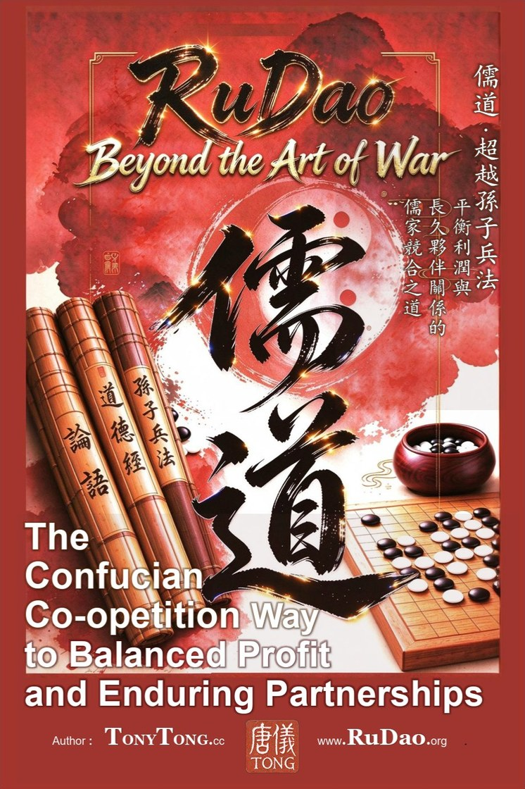

RuDao: Beyond The Art of War — The Confucian Co-opetition Path to Balanced Profit and Enduring Partnerships

| 書名 | 《儒道：超越孫子兵法》 |
|---|---|
| 中文副書名 | 平衡利潤與長久夥伴關係的儒家競合之道 |
| 英文書名 | RuDao: Beyond The Art of War — The Confucian Co-opetition Path to Balanced Profit and Enduring Partnerships |
| 作者 | 唐儀 TonyTong.cc |
| 官網 | www.RuDao.org |
| 核心定位 | 儒家競合戰略 — 超越零和博弈的第三條商業道路 |
| 全書主旨 | 內修儒商之德以治企，外行儒將之道以競合——利潤與夥伴關係可以兼得 |
長久以來，《孫子兵法》被奉為商業博弈的經典，教會人們戰勝對手、奪取勝利。但以擊敗競爭者為目標的零和思維，常常摧毀合作根基、損耗信任、難以維繫長期夥伴關係。
本書跳出單純對抗的商戰邏輯，闡釋源自儒家思想的競合之道（Co-opetition）：不必在利潤和情義之間二選一。在激烈競爭的同時，依然可以構建穩固、長久的夥伴網絡。
《孫子兵法》教你如何打敗對手。《儒道》教你：競爭的同時守護夥伴，平衡商業利潤與長久合作關係。
關鍵詞：儒道 · 儒將 · 競合 · 儒家商業 · 超越孫子兵法 · 夥伴關係 · 商業共贏 · 商業倫理 · 跨境經營 · 內聖外王
Keywords: co-opetition · Confucian business · beyond The Art of War · Sun Tzu alternative · enduring business partnership · win-win strategy · ethical leadership · Inner Sage Outer King
唐儀（Tony Tong），跨境企業家、資深投資人、商業戰略學者、香港區塊鏈協會（HKBA）聯合創始人。深耕全球跨境商業、金融科技與跨國合作數十年，親歷無數國際商業博弈、併購談判與長期聯盟搭建。長期融合儒家義利思想與現代全球化商業體系，系統提煉出儒將競合戰略：真正的高階商業勝利，不是擊敗對手，而是在激烈競爭中守住道義、平衡利潤、沉澱可持久的夥伴關係。
Tony Tong is a global entrepreneur, seasoned cross-border investor, business strategist, and co-founder of the Hong Kong Blockchain Association (HKBA). Moving beyond the purely competitive mindset of The Art of War, he created the Ru-Jiang co-opetition framework — a balanced strategic system that combines fierce competition with sincere cooperation, profit pursuit with long-term trust. He devotes his research and practice to spreading modern Chinese business wisdom worldwide.